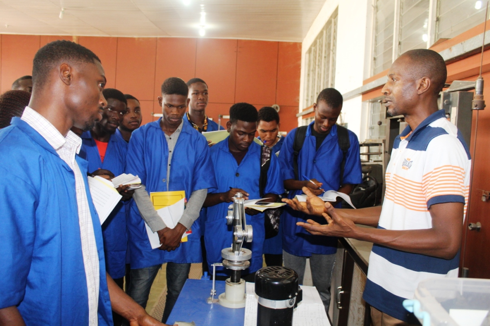
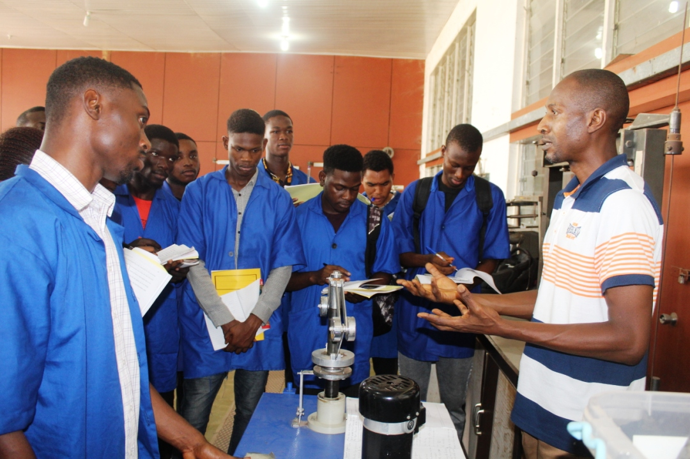
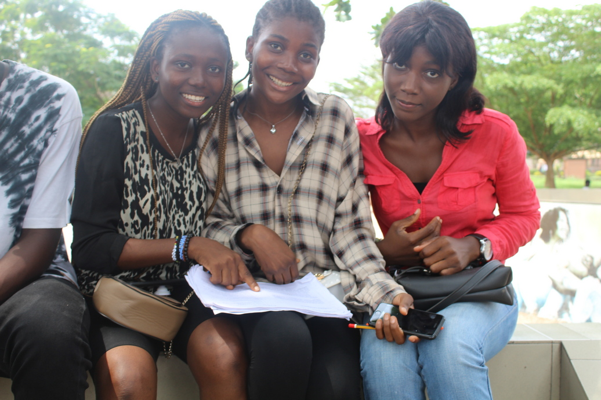
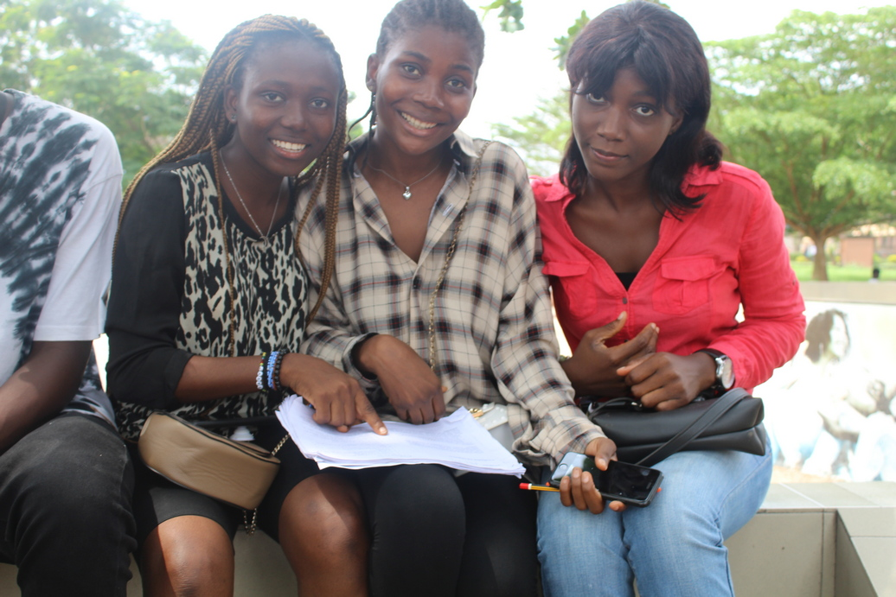
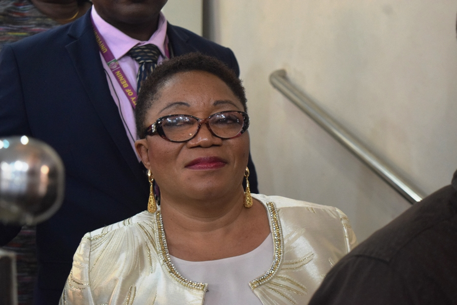
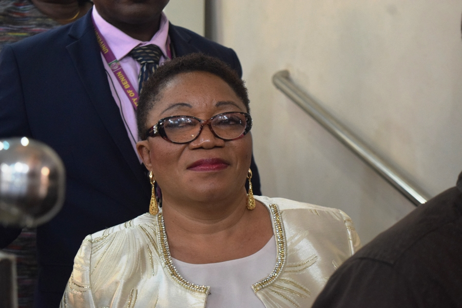

Welcome to University Of Benin
Email Transcript Library Servicom Tetfund Qualify Assurance
Welcome to the lastest batch of nurses graduating
from the department of nursing.
NEWS
Impact workshop on the univeristy of benin policy
Acedemic Calender
First semester lectures continues march 22
Online registration of new students 2022/2023 acedemic session begins march 27
First semester examination begins in facuties of Education, life sciences, Pharmacy and Physical sciences
students (2021/2022 session) go on break.
life update
Get Connected


Trending on Twitter
 The Vice-Chancellor Prof (Mrs.) Lilian I. Salami, cordially invites the staff, students and the public
The Vice-Chancellor Prof (Mrs.) Lilian I. Salami, cordially invites the staff, students and the publicto the University of Benin 46th and 47th Convocation Ceremony.
Trending on facebook
This to inform graduands that collection of gowns for 46TH and 47th Convocation of the University of Benin begins on Monday 22nd Nov.,2021, and ends on Tuesday 30th Nov.,2021 (8:00am to 5:00pm daily).Graduands are to bring with them,
2 photocopies of their receipts of payment for the academic gowns.
Gallary

 

3.jpeg) 

 
